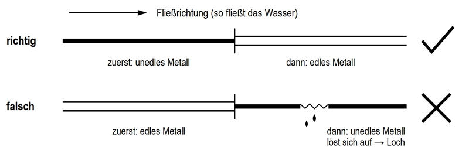

Rohrwerkstoffe
Heute lernst du: aus welchen Materialien Rohre sind, was ein Rohr aushalten muss, wie Stahl, Kupfer und Kunststoff sich unterscheiden und welches Rohr man wofür nimmt.
So arbeitest du: Lies zuerst den grauen Infokasten. Mach dann die Aufgaben darunter. Die Antworten findest du im Infokasten. Fertig? Tippe bei jeder Aufgabe auf „Prüfen“. Bessere deine Fehler aus.
Die Kästen mit Strichellinie und ★★★ („Mehr wissen“ und „Vertiefung“) sind erweiterte Aufgabenstellungen.
Infokasten A: Aus welchem Material ist das Rohr? (Rohrwerkstoffe)
|
Der Werkstoff ist das Material, aus dem das Rohr gemacht ist. Es gibt zwei große Gruppen:
Merke: Rohre sind aus Metall oder aus Kunststoff. |
Aufgabe 1 ★ leicht
Lies Infokasten A. Ist das Rohr aus Metall oder aus Kunststoff? Schreib jedes Rohr in die richtige Spalte.
Diese Rohre gibt es: Kupferrohr – PE-Rohr – verzinktes Stahlrohr – PP-Rohr – Edelstahlrohr – Mehrschichtverbundrohr – schwarzes Stahlrohr
| Metall | Kunststoff |
|---|---|
Infokasten B: Was muss ein Rohr aushalten? (Eigenschaften von Rohrwerkstoffen)
|
Auf der Baustelle und im Haus muss ein Rohr viel aushalten. Diese Eigenschaften sind wichtig:
Spröde heißt: Das Material bricht leicht, wie Glas. Merke: Kunststoffrohre nicht lange in der Sonne lagern. Sie werden spröde. |
Aufgabe 2 ★ leicht
Lies Infokasten B. Was passt zusammen? Schreib den Buchstaben ins Kästchen.
| Auf der Baustelle | Eigenschaft | |
|---|---|---|
| 1. Ein Ziegel fällt auf das Rohr. Es bleibt ganz. | A UV-Beständigkeit | |
| 2. Das Rohr liegt im Sommer draußen. Es bleibt gut. | B Wärmeausdehnung | |
| 3. Heißes Wasser fließt durch. Das Rohr wird länger. | C Korrosionsbeständigkeit | |
| 4. Das Rohr liegt 30 Jahre in feuchter Erde und rostet nicht. | D mechanische Festigkeit |
Aufgabe 3 ★★ mittel
Lies Infokasten B. Schreib den Satz fertig.
a) Kunststoffrohre lagert man im Schatten, weil
b) Wenn Luft durch die Rohrwand ins Heizungswasser kommt, dann
Infokasten C: Stahl, Kupfer oder Kunststoff? (Werkstoffvergleich)
|
Jeder Werkstoff kann etwas gut und etwas schlecht. Die Tabelle zeigt, wie viel ein Werkstoff von einer Eigenschaft hat: viel, mittel oder wenig.
Das Mehrschichtverbundrohr ist anders: Die Schicht aus Aluminium macht es dicht gegen Luft. Merke: „Viel“ ist nicht immer gut. Viel Gefahr von Rost ist schlecht. |
Aufgabe 4 ★ leicht
Lies Infokasten C. Füll die leeren Felder aus: viel, mittel oder wenig.
| Eigenschaft | Stahl | Kupfer | Kunststoff |
|---|---|---|---|
| hält Kräfte aus | viel | ||
| wird länger bei Wärme | mittel | ||
| dicht gegen Luft | wenig | ||
| Gefahr von Rost | mittel |
Aufgabe 5 ★ / ★★
Lies Infokasten C. Stimmt der Satz? Kreuze an: richtig (R) oder falsch (F).
| Satz | R | F |
|---|---|---|
| a) ★ Ein Kunststoffrohr rostet nicht. | ||
| b) ★ Ein Kunststoffrohr wird bei Wärme weniger lang als ein Stahlrohr. | ||
| c) ★ Stahl hält mehr Kraft aus als Kunststoff. | ||
| d) ★★ Stahl hat viel Gefahr von Rost. Das ist gut für das Rohr. |
e) ★★ Schreib den Satz fertig. Ein Grund reicht.
Kupfer ist besser als Kunststoff, weil
Infokasten D: Wie viel länger wird das Rohr? (Wärmeausdehnung)
|
Ein Rohr ist 10 Meter lang. Das Wasser darin wird um 50 Grad wärmer (z. B. von 10 °C auf 60 °C). So viel wird das Rohr länger:
Merke: Kunststoffrohre werden bei Wärme viel länger als Metallrohre. Darum braucht ein Kunststoffrohr Platz zum Länger-Werden. Wie man das macht, lernst du später. |
Aufgabe 6 ★★ mittel
b) Schau in Infokasten D. Kreuze an.
Bei Wärme wird das Kunststoffrohr …
| nur ein bisschen mehr länger als das Kupferrohr. | |
| ungefähr doppelt so viel länger wie das Kupferrohr. | |
| mehr als zehnmal so viel länger wie das Kupferrohr. |
Infokasten E: Welches Rohr nimmt man wofür? (Einsatzgebiete)
|
Das Rohr muss zur Aufgabe passen. Das steht in den ÖNORMEN. Diese Rohre nimmt man oft:
Achtung: Ein einfaches PE-Rohr nicht in die Heizung! Luft kommt durch die Rohrwand. Dann rosten andere Teile der Heizung. Merke: Die Eigenschaften vom Rohr müssen zur Aufgabe passen. |
Aufgabe 7 ★★ mittel – Auf der Baustelle
Lies Infokasten E. Welches Rohr passt? Schreib ein passendes Rohr auf. Schreib dann den Grund dazu.
| Situation | Rohr | Grund: Ich nehme dieses Rohr, weil … |
|---|---|---|
| a) Der Hausanschluss kommt neu. Die Leitung liegt in der Erde. | ||
| b) Im Keller kommt eine neue Heizungsleitung. Der Chef will Kunststoff. | ||
| c) Vom Waschbecken soll das Abwasser weg. |
Aufgabe 8 ★★ mittel – Fehler finden
Lehrling Max erzählt von seiner Woche. Zwei Sachen hat er falsch gemacht.
a) Lies Infokasten B und E. Kreuze die zwei Fehler an.
| Max sagt | falsch |
|---|---|
| 1. „Die PE-Rohre habe ich im Hof in die Sonne gelegt. Da sind sie schön warm.“ | |
| 2. „Für den Hausanschluss in der Erde habe ich ein PE-Rohr genommen.“ | |
| 3. „Für die Fußbodenheizung habe ich ein einfaches PE-Rohr genommen.“ | |
| 4. „Die Heizung im Heizraum habe ich mit Stahlrohr gemacht.“ |
b) Was hätte Max richtig machen sollen? Schreib zu jedem Fehler einen Satz.
| Fehler | : | |
| Fehler | : |
Mehr wissen ★★★: Zwei Metalle in einer Leitung (Mischinstallation)
|
Metalle sind edel oder unedel. Edel heißt: Das Metall löst sich im Wasser kaum auf (z. B. Gold, Kupfer). Unedel heißt: Es löst sich leichter auf (z. B. Eisen, verzinkter Stahl). Kupfer ist also edler als verzinkter Stahl. Fließrichtung = in diese Richtung fließt das Wasser.  Fließt Wasser von Kupfer zu verzinktem Stahl, dann löst sich der Stahl auf. Das Rohr kann kaputt werden (Rohrbruch). Merke: In Fließrichtung kommt zuerst das unedle Metall, dann das edle. Am besten: in einer Leitung nur ein Metall verwenden. |
Aufgabe 9 ★★★ Vertiefung
Drei Wasserleitungen. Das Wasser fließt immer von links nach rechts (→).
a) Lies „Mehr wissen“. Kreuze an: gut oder schlecht?
| Leitung | Rohre in Fließrichtung | gut | schlecht |
|---|---|---|---|
| A | Kupfer → verzinkter Stahl | ||
| B | verzinkter Stahl → Kupfer | ||
| C | Kupfer → Kupfer |
b) Welche Leitung ist am besten? Begründe.
Aufgabe 10 ★★ mittel – Fachbegriffe
Fachbegriffe sind die Wörter, die man auf der Baustelle verwendet.
Steht der Fachbegriff da? Dann erkläre ihn mit eigenen Worten.
Steht die Erklärung da? Dann schreib den Fachbegriff dazu.
Diese Fachbegriffe gibt es: Wärmeausdehnung – Nennweite – Korrosion – Edelstahl – diffusionsdicht – Gefälle – Werkstoff
Achtung: 2 Wörter bleiben übrig. Tipp: Lies die Infokästen A bis E.
| Fachbegriff | Erklärung |
|---|---|
| Das Material, aus dem das Rohr gemacht ist. | |
| Kunststoffrohr | |
| Rost. Das Material wird zerstört. | |
| spröde | |
| Das Rohr wird länger, wenn es warm wird. | |
| Sauerstoffdiffusion | |
| Stahl, der nicht rostet. | |
| mechanische Festigkeit | |
| Keine Luft kommt durch die Rohrwand. |
Aufgabe 11 ★★★ schwer – Fachbegriffe auf Englisch
Wie heißt der Fachbegriff auf Englisch? Schreib das englische Wort in die Tabelle.
Diese Wörter gibt es: copper – plastic – rust – stainless steel – steel – heating – valve – material – drinking water – sun – tap – metal
Achtung: 2 Wörter bleiben übrig.
| Deutsch | Englisch | Deutsch | Englisch |
|---|---|---|---|
| Stahl | Werkstoff | ||
| Kupfer | Rost | ||
| Kunststoff | Heizung | ||
| Edelstahl | Trinkwasser | ||
| Metall | Sonne |
Fertig? Tippe bei jeder Aufgabe auf „Prüfen“. Bessere deine Fehler aus.